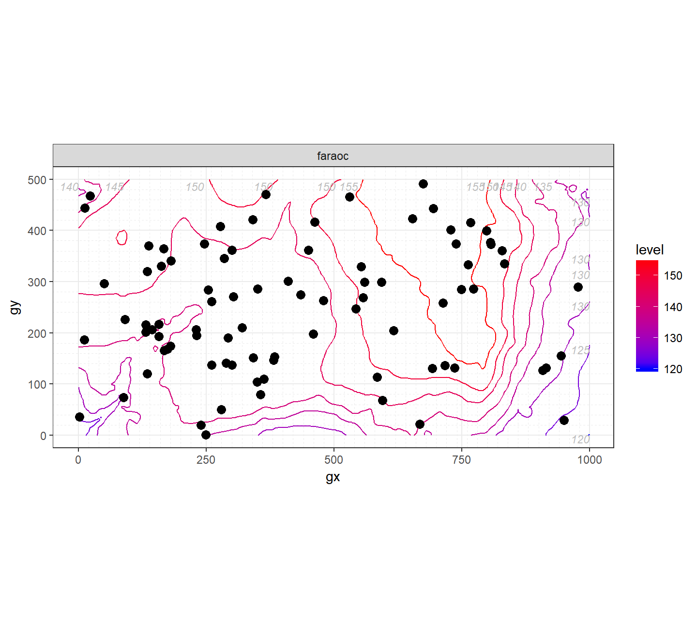
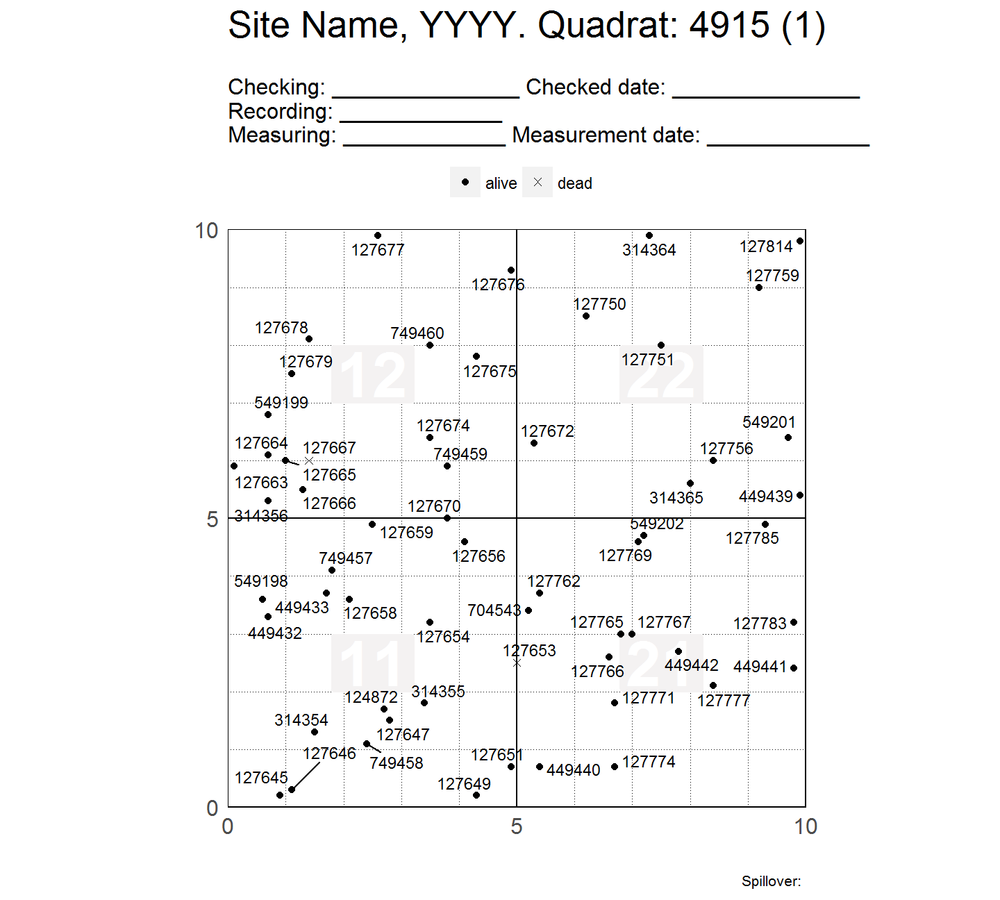
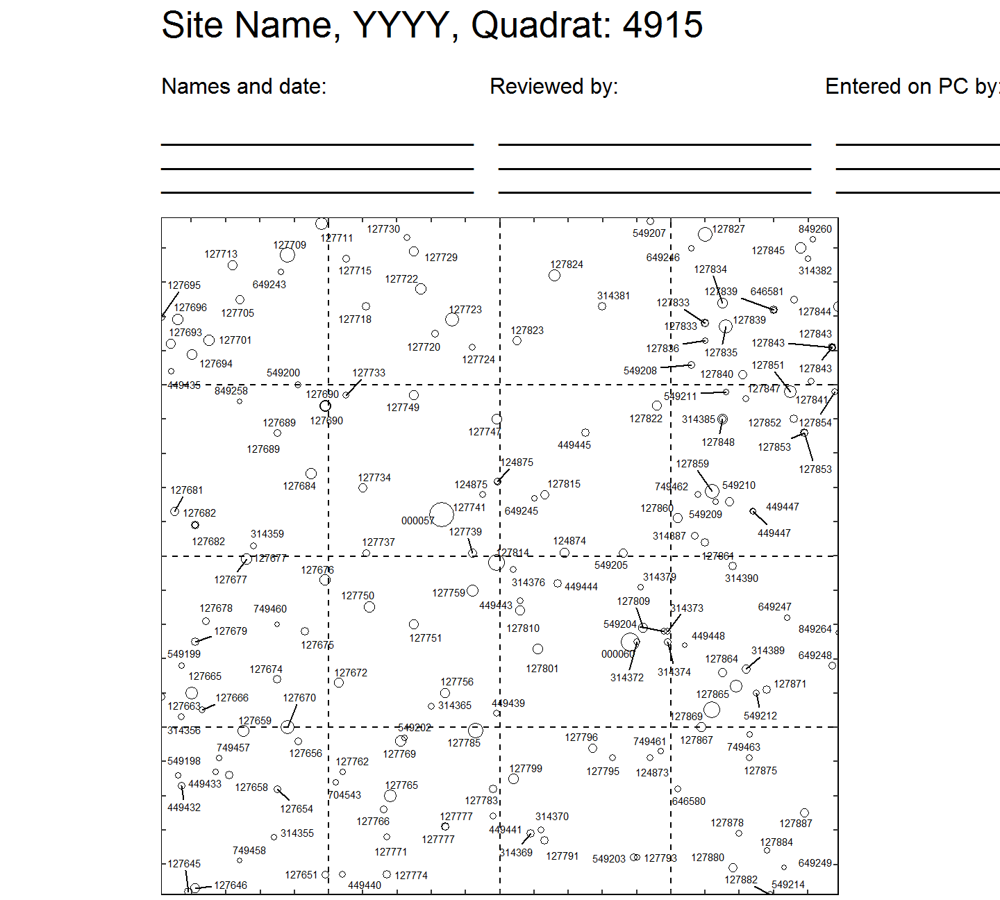

Installation
Install fgeo.map from GitHub with:
# install.packages("remotes")
remotes::install_github(repo = "forestgeo/fgeo.map")
library(fgeo.map)Or with:
source("https://install-github.me/forestgeo/fgeo.map")Example
library(fgeo.map)
library(bciex)
library(fgeo.tool)
library(dplyr)
#>
#> Attaching package: 'dplyr'
#> The following objects are masked from 'package:stats':
#>
#> filter, lag
#> The following objects are masked from 'package:base':
#>
#> intersect, setdiff, setequal, unionMap species’ distribution.
census <- bci12t7mini
# Fix structure of elevation data
elevation <- restructure_elev(bci_elevation)
# All maps
p <- maply_sp_elev(census, elevation, species = c("faraoc", "hybapr"))
# Show first map
first(p)
Map tree tags by status, showing four subquadrats per plot-page.
# Fix two wrong names
viewfulltable <- rename(bci12vft_mini, qx = x, qy = y)
# Filter one plot and one census
vft <- filter(viewfulltable, PlotID == 1, CensusID == 6)
# All maps
p2 <- maply_tag(vft)
length(p2)
#> [1] 40
# Show first map
first(p2)
Map trees within a quadrat mapping tree diameter to point size.
# Filtering:
# * Trees of diameter greater than 10 cm;
# * Last census;
# * Plot 1.
vft2 <- filter(
viewfulltable,
DBH > 10,
CensusID == max(CensusID, na.rm = TRUE),
PlotID == 1
)
# All maps
p3 <- maply_quad(vft2)
#> * Appending tags of dead trees with the suffix '.d'
#> Warning in fgeo.tool::str_suffix_match(crucial$tag, crucial$status,
#> status_d, : No stem has status `dead`. Is this what you expect?
#> * Standarizing `dbh` by the count of `dbh` measurements
length(p3)
#> [1] 10
# Show first map
first(p3)